线程与互斥锁
UME 项目组内部教程 · Q11（Q） · 从线程讲到锁：上下文切换、竞态、临界区与同步
C++ 并发 互斥锁
这一篇从线程讲起，最后落到互斥锁。
顺序是有意的：不理解线程为什么存在，就不会理解锁为什么必须存在。 所以前三节先讲清楚「线程是什么、和进程差在哪、什么时候值得用」， 第四节给一个真实场景，然后再讲锁。
1线程的概念
到目前为止，我们写的程序都是一条执行流：从 main 进去，
一行一行往下走，走完结束。这种程序叫单线程。
线程（thread）就是程序内部的一条执行流。 一个进程里可以同时有多条线程，每条都在跑自己的一段代码。
线程 = 同一个程序里的并发执行流。
「并发」的意思是：它们都在往前推进，看起来是同时的 —— 在多核机器上确实是真的同时；核心不够时则由系统快速轮流切换。
线程有什么、没有什么
| 说明 | |
|---|---|
| 各自拥有 | 调用栈（所以局部变量、函数返回地址是各自一份）、 寄存器现场（当前执行到哪一行） |
| 共享 | 地址空间里的堆、全局变量、静态变量、 打开的文件与网络连接 |
这张表的第二行，就是这一篇后面所有麻烦的来源：
两条线程看的是同一个 int，谁都能改它。
2上下文切换
两条线程「同时在跑」，其实要分两种情况说：
- 核够多：两条线程真的各占一个核，物理上同时执行。
- 核不够（线程数多于核数，或者单核机器）：只能轮流用 CPU。 看起来是同时，实际是换得足够快。
这个「换」有个名字：上下文切换（context switch）。
操作系统把 CPU 从一条线程交给另一条线程的过程。
一次切换要做四件事：
- 保存当前线程的现场：寄存器、栈指针， 以及「下一条该执行哪条指令」（程序计数器）
- 挑出下一条要运行的线程
- 恢复它上次保存的现场
- 从它上次停下的地方接着往下跑
本机实测（MSVC 14.51）：
hardware_concurrency = 24
也就是 24 个逻辑核。只要同时活跃的线程超过这个数，就一定有人在排队， 而排队就意味着切换。
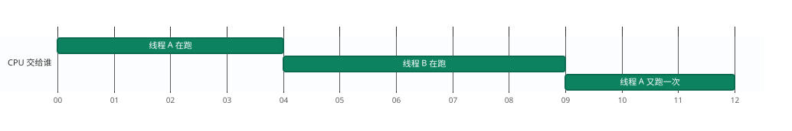
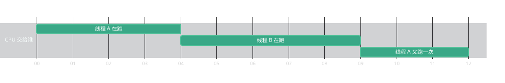
任何时刻只有一条线程真正占着 CPU。线程 A 在时间片 0–3 跑，4 起换成线程 B，9 又换回来 —— 「同时」是靠这样来回换出来的，不是两条真的一起在算。
什么时候会切
| 时机 | 说明 |
|---|---|
| 时间片用完 | 系统给每条线程一小段时间，用完就换人。这不需要你同意。 |
| 等待 | 等锁、等 I/O、等条件变量时，线程没事可做，系统就把 CPU 让给别人 |
| 主动让出 | std::this_thread::yield()：我暂时没活，先让别人跑 |
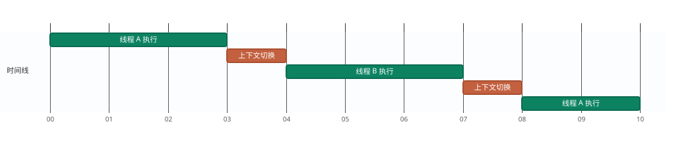
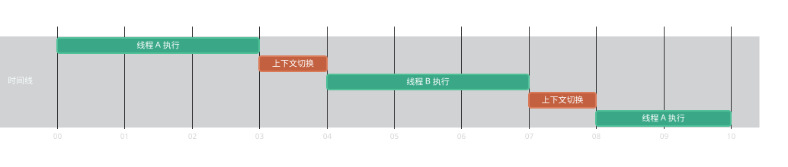
中间那两条橙红色窄块就是切换本身：保存现场 → 挑人 → 恢复现场。这段时间没有任何计算产出。线程开得越多，这种空隙越密，总时间反而可能更长。
切换要进内核、要换栈、还会打乱 CPU 缓存。所以 线程不是越多越好 —— 开几百条线程去做十几条线程能做完的事， 多出来的时间大量花在切换上，而不是计算上。
经验做法：计算类任务开「核数上下」条线程，就够了。
为什么这件事决定了后面所有的麻烦
看第一节那张表：线程共享堆和全局变量。而上下文切换可以发生在 任意两条机器指令之间 —— 不是「一行代码」的边界，更不是你写代码时的 某个自然的停顿点。
于是 ++counter 这种看起来一步的操作，完全可能在
「读到值」和「写回值」中间被换下去；等它再被换回来时，
那个值已经被别的线程改过了。第 6 节的竞态，根子就在这里。
既然打断是系统说了算，人管不住，那就只能约定： 某几行代码，同一时刻只让一条线程进来。这就是第 7 节的临界区与锁。
3线程与进程的区别
| 进程（process） | 线程（thread） | |
|---|---|---|
| 是什么 | 一个正在运行的程序实例 | 进程内部的一条执行流 |
| 地址空间 | 各自独立，互不可见 | 共享同一个 |
| 创建 / 切换开销 | 贵（要分配地址空间、切换页表） | 便宜（同一个地址空间里换个栈和寄存器） |
| 互相通信 | 要走进程间通信：管道、共享内存、套接字…… | 直接读写同一个变量 —— 零成本 |
| 隔离性 | 强：一个进程崩了，通常不影响别人 | 没有：一个线程崩了（比如野指针）， 整个进程一起完 |
因为共享地址空间，线程之间传数据不用任何协议 —— 这就是它快的原因。
但也正因为共享，两条线程可以在同一瞬间改同一个变量。 进程之间不会有这个问题（内存互相看不见），线程之间必然会有。
能不用就不用 —— 如果两个任务之间几乎不需要共享数据 （比如一个跑计算、一个只管画界面），多进程反而更安全。
但绝大多数程序里，各个任务要频繁看同一份数据（同一份角色状态、 同一个统计数组），走进程间通信会非常啰嗦。这时才用线程， 并且必须自己承担同步的责任。
4多线程编程的必要性
「线程更便宜」本身不是理由。真正需要多线程的场合只有两类：
| 场合 | 典型例子 | 为什么单线程不行 |
|---|---|---|
| 算得太多 （CPU 密集） |
大规模数值模拟、图像处理、物理计算 | 单线程只能用满一个核；现在的机器有 8 核、16 核， 剩下全是空的 |
| 等得太久 （I/O 密集） |
读大文件、等网络响应 | 等待期间那条线程是闲着的；如果它是唯一线程， 整个程序（包括界面）就卡住不动 |
反过来说：如果一件事本来就是串行的，或者量小得几十毫秒就跑完， 多线程只会带来麻烦，不会带来收益。
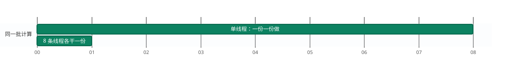
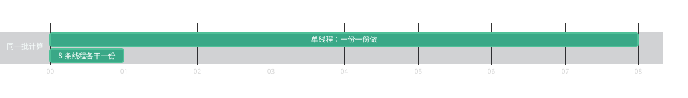
示意图，不是实测。同一批计算，一条线程顺着做完；切成几份交给多个核，墙钟时间大致按份数缩短。这就是第 4 节说「算得太多」才值得多线程的理由。
- 竞态：同一份数据被同时改，结果时对时错
- 死锁：几个线程互相等，程序整体卡死
- 难调试：问题不一定每次复现，日志顺序也不固定
所以判断标准不是「能不能用多线程」，而是 「这份工作值不值得承担这份复杂度」。
5一个真实的例子：Po 的抽卡统计
说个具体的事。
《原神》玩家 Po 想搞清楚一个问题： 自己大概多少抽能出金？在哪一抽出金的概率最大？
它取决于保底、软保底，以及概率随抽数的变化。 所以 Po 用了一个最直接的办法：暴力模拟。
- 写一个函数
simulateOneRun()：模拟「一直抽，直到出金」， 返回第几抽出金 - 把这个过程跑 500 万次
- 用一个数组
hit[n]记：第n抽出金出现了多少次 - 跑完看
hit：最大的那一格就是概率最高的抽数
500 万次，单线程跑一遍要等很久。而这件事天然可以切成几份同时做 —— 每一次模拟之间毫无关系。这就是第 4 节说的「CPU 密集」。
simulateOneRun() 里怎么算概率、怎么处理保底，
那是数值模拟的事，和「多线程」没有关系。本篇
不给出它的实现，只展示外面的多线程框架。
下面代码里它被当成一个黑盒：调一次，得到一个抽数。
多线程那部分
把 500 万次切成 8 份，交给 8 个线程各跑一份：
#include <thread> #include <vector> const int RUNS = 5000000; /* 总共模拟 500 万次 */ const int THREADS = 8; /* 分给 8 个线程 */ const int MAX_PULLS = 180; /* 最多 180 抽 */ /* hit[n] = 第 n 抽出金的次数 */ std::vector<long long> hit(MAX_PULLS + 1, 0); const int PER = RUNS / THREADS; std::vector<std::thread> ts; for (int t = 0; t < THREADS; ++t) { ts.emplace_back([&] { for (int r = 0; r < PER; ++r) { int n = simulateOneRun(); /* 抽卡过程：本篇不展开 */ ++hit[n]; /* ← 8 个线程同时写这里 */ } }); } for (auto& th : ts) th.join(); /* 等所有线程跑完 */ /* 跑完看 hit 里最大的那一格，就是 Po 想知道的答案 */
三个要点：
[&] 捕获列表
表示「按引用使用外面的变量」，所以线程里能直接读写
hit —— 也就埋下了隐患。PER 把总量切开
每个线程只跑自己那 62.5 万次，互不重叠，
所以「跑多少次」这部分不需要同步。join()
等这个线程结束。不 join 就直接用结果，
会读到还没算完的数据；而且线程对象析构时若还没结束，程序会直接终止。问题就在 ++hit[n] 这一行。
8 个线程在同时改同一个数组 —— 下一节说清楚为什么会出错。
6竞态条件：非原子的读改写
结果取决于线程的执行顺序 —— 谁先跑、谁后跑、在哪被上下文切换打断， 都会改变最终结果。
同一份代码、同样的输入，可能这次对、下次错，而且错的时候不报任何错。 这是它比崩溃更难查的根本原因。
下面这个最小实验就是最典型的一种竞态：多个线程对一个变量做「读—改—写」。
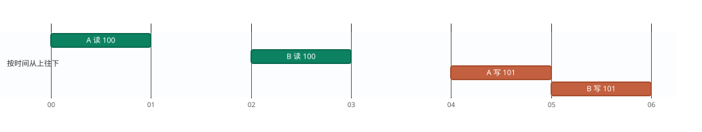
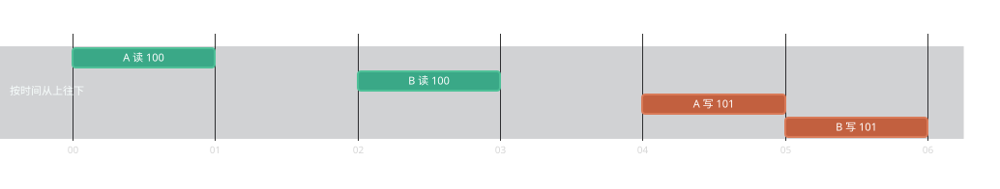
两条线程都在对方写回之前读到了 100，各自加 1 得到 101，然后先后写回 101 —— 加了两次，值只涨了 1。第二次写回把第一次覆盖掉了。
8 个线程，每个把同一个计数器加 5 万次，应该得到 40 万：
const int N = 8, M = 50000; long long counter = 0; std::vector<std::thread> ts; for (int i = 0; i < N; ++i) ts.emplace_back([&] { for (int k = 0; k < M; ++k) ++counter; }); for (auto& t : ts) t.join(); std::printf("counter = %lld (expect %lld)\n", counter, (long long)N * M);
counter = 122439 (expect 400000)
同一台机器上跑出过 122439、122856、139002，
每次都不相同；极小概率下也可能碰巧得到 400000。
「跑一次是对的」不能证明没问题 —— 这正是竞态最麻烦的地方。
为什么丢：++counter 不是一步
counter 的值读进寄存器② 加：寄存器里的值加 1
③ 写：把寄存器里的值写回
counter
只要两个线程在 ① 和 ③ 之间交错，就会丢：
回到 Po 的程序：连总数都不对
++hit[n] 是同一个毛病。把抽卡模型换成一个占位函数
（均匀分布，只为演示线程部分），实测：
1) no lock : total = 1858550 (expect 2000000) 2) lock_guard: total = 2000000
200 万次模拟，只统计到 185 万次 —— 丢了 14 万次记录。
他算的是概率分布。总数少了 7%，说明有些「抽数」被漏记了， 而且漏得不均匀 —— 哪一格被同时写得多，哪一格就漏得多。
结果就是：峰值位置可能是错的。他辛苦跑出来的结论， 建立在错误的数据上。这就是竞态最坏的地方 —— 程序不崩、不报错， 只是悄悄给你一个错的答案。
7互斥锁：临界区与 lock_guard
std::mutex 的作用：同一时刻只允许一个线程进去，
其余线程在外等。
但不要手写 lock() / unlock()：
中途 return 或抛异常就会跳过 unlock()，
锁永远不释放，其他线程全部永久卡住 ——
这种错误比数据错更糟，因为程序会「静默地不再前进」。
正确做法是 RAII 包装 std::lock_guard：
构造时加锁，析构时解锁。
std::mutex m;
ts.emplace_back([&] {
for (int r = 0; r < PER; ++r) {
int n = simulateOneRun();
{
std::lock_guard<std::mutex> g(m); /* 加锁 */
++hit[n]; /* 临界区：只有这一行 */
} /* g 析构 → 自动解锁 */
}
});lock_guard: total = 2000000
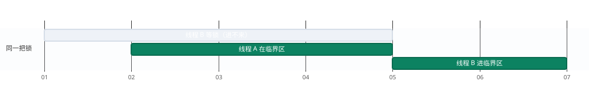
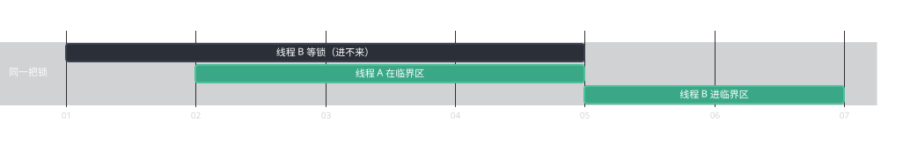
加了锁之后，两段临界区完全不重叠：B 在等锁的整段时间里进不来，A 退出（g 析构）的那一刻 B 才拿到。这就是「串行化」在时间轴上的样子。
200 万，一分不差。
一段访问共享数据的代码，它必须一次只让一条线程执行。
在这段代码里，从 g 构造到 g 析构之间，
别的线程进不来 —— 这是「正确」的代价：这一段被串行化了。
所以临界区的大小是个取舍：太大了会损失并发，太小了会漏掉该保护的操作。 判断标准只有一条 —— 哪些行必须「一起成立」，它们就得在同一个临界区里。
临界区放多大：Po 这里的取舍
上面只锁了 ++hit[n] 一行，simulateOneRun()
在锁外 —— 这是对的。因为模拟本身不碰共享数据，
把 500 万次调用都锁起来，等于把多线程的好处全扔了。
{
std::lock_guard g(m);
int n = simulateOneRun();
++hit[n];
}
/* 模拟本身耗时
→ 8 个线程全在排队
→ 和单线程一样慢 */
int n = simulateOneRun(); /* 锁外并行 */
{
std::lock_guard g(m);
++hit[n]; /* 锁内一行 */
}
/* 模拟并行跑
→ 真正用上了多个核 */
临界区只放「会碰共享数据」的那几行；耗时的纯计算放在外面。
反例也要记住：如果几行操作必须一起完成 （比如「扣钱」和「加货」要同时成立），那它们必须在同一个临界区里 —— 拆开就会出错。
8两把锁：死锁与 scoped_lock
需要同时锁两把锁时，顺序不一致就会死锁：
/* 线程 1 */ lock(m1); lock(m2); /* 等 m2 */ /* 线程 2 */ lock(m2); lock(m1); /* 等 m1 */
std::scoped_lock g(m1, m2); /* 两把一起拿到， 内部用「避免死锁」的 算法，不会互相等 */
两个线程各拿到一把、又都在等对方那一把 —— 谁也走不了，程序卡死。 而且它不一定每次都发生，取决于调度，所以测试时可能一直正常。
修法不是「小心保持顺序」（约定靠人守不住），而是一次把两把都锁上。
C++17 的 std::scoped_lock 就是干这个的：
scoped_lock : a=16000 b=16000
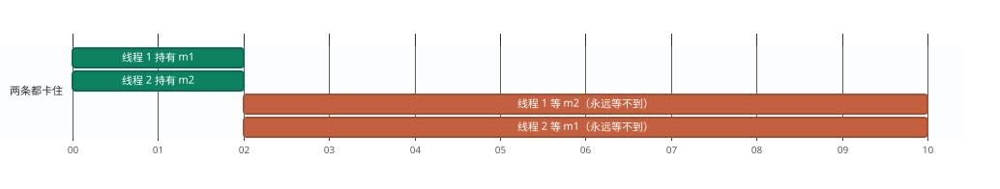
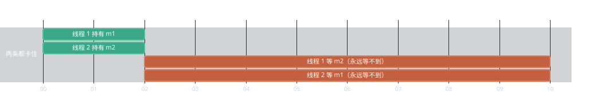
两条线程各拿到一把锁，然后都在等对方手里那把。横条右边没有任何「继续」的块 —— 不是变慢，是永远不动了。死锁不报错、不崩溃，只是程序不再前进。
9不必加锁的场合：单变量原子操作
Po 的统计数组要用锁（要保护的是「算下标 + 自增」这个组合）。
但如果共享的只是一个计数器，锁就是重武器：
std::atomic 更轻，而且没有「忘记解锁」的风险。
#include <atomic> std::atomic<long long> counter{0}; /* 各线程里 */ ++counter; /* 这是一步，不会丢更新 */
atomic : 400000
atomic 只保证单个变量的操作不可分割。
一旦要保护的是两个变量之间的一致性（扣钱与加货必须一起成功），
就必须用锁 —— 两行 atomic 加起来不是原子的。
Po 的 hit 是个数组：hit[n] 的读改写虽然只针对一格，
但「先算下标、再自增」这组操作用锁表达更清楚。
能用锁讲明白的地方，别为了省一点开销硬塞 atomic。
10常见错误
错误 1 · 手写 lock() / unlock()
中途 return 就漏掉 unlock()，锁再也不释放，
其他线程全部永久等待。用 lock_guard，不要手写。
错误 2 · 只锁了一部分
「检查再使用」是最典型的：两个操作分开加锁，中间就有缝。 凡是必须一起成立的读写，都要在同一把锁里。
错误 3 · 忘了 join()
std::vector<std::thread> ts; /* … 起线程 … */ /* ✗ 少了 for (auto& t : ts) t.join(); */ printResult(hit); /* ← 统计还没算完，读到半成品 */
更严重的是：std::thread 对象析构时如果线程还没结束，
程序会直接终止。所以每个线程都要么 join()、
要么 detach() —— 但 Po 这种「要等结果」的场景只能用 join()。
错误 4 · 以为「没加锁但也没出错」就是对的
竞态的表现就是时对时错。不加锁的版本跑一次得到正确总数， 完全可能 —— 但代码依然是错的。
错误 5 · 两把锁顺序不一致
第 8 节的死锁。用 scoped_lock 一次锁住，
或者从设计上避免「同时需要两把锁」。
11一页速查
概念
| 概念 | 一句话 |
|---|---|
| 线程 | 同一个程序里的并发执行流；有自己的栈，共享堆和全局变量 |
| 上下文切换 | CPU 从一条线程换到另一条；保存现场、挑人、恢复现场。 可以发生在任意两条指令之间 |
| 进程 | 运行中的程序实例；地址空间独立，隔离强、通信贵 |
| 竞态 | 结果取决于线程调度顺序；读改写不是原子操作就会丢更新 |
| 临界区 | 被锁保护的那段代码，同时只能有一个线程在里面 |
| 死锁 | 若干线程互相等对方持有的锁，谁都走不了 |
写法
| 想做的事 | 写法 / 结论 |
|---|---|
| 起一个线程 | std::thread t([&]{ … }); |
| 等线程结束 | t.join(); |
| 保护一段代码 | std::lock_guard<std::mutex> g(m); |
| 同时锁两把 | std::scoped_lock g(m1, m2); |
| 只保护一个计数变量 | std::atomic<int> n{0}; |
| 临界区该多大 | 只包住碰共享数据的几行；耗时计算放锁外 |
| 怎么确认真的修好了 | 跑多次；一次对不算数（竞态时对时错） |
- 线程共享地址空间 —— 这是它便宜的原因，也是所有麻烦的原因。
- 多线程只在「算得多」或「等得久」时值得；否则是纯负担。
- 锁保护的是「一段代码」，不是「一个变量」： 凡是必须一起成立的读写，都要在同一把锁里。
- 用 RAII 包装，不手写
lock/unlock； 两把锁用scoped_lock一次锁住。
- Q10 · 智能指针
—— 同一条 RAII 思路：
lock_guard和unique_ptr是同一个招式的两种用法。 - M05 · 静态、动态内存与内存安全初步 —— 栈、堆与「谁负责释放」； 线程各自的栈也是在那里讲的。
- M02 · 函数初步
—— 临界区的边界就是作用域；
lock_guard靠「离开作用域就析构」工作。